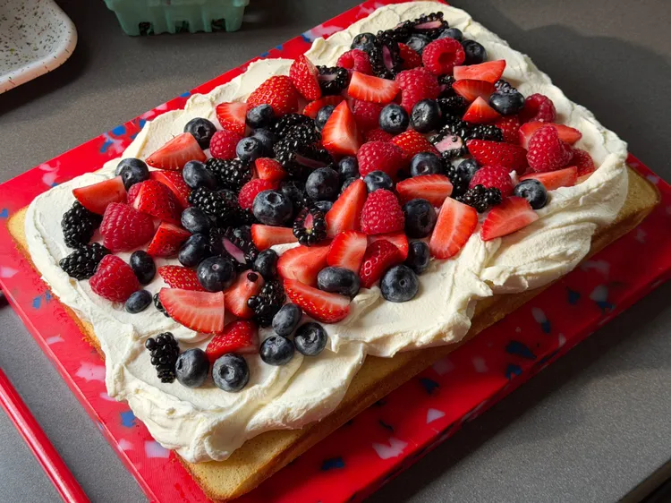

Berry Chantilly Sheet Cake

Description
This berry chantilly sheet cake is an easy to make and serve cake.
It is layers with fully Chantilly cream, with a four fresh berries on top.
It would be the perfect cake for Fourth of July (allrecipes.com, 2026).
Ingredients
Cake
- 4 large eggs
- 1 1/4 cups white sugar
- 2 cups cake flour or all-purpose flour
- 1 1/2 teaspoons baking powder
- 1 cup whole milk
- 1/4 cup unsalted butter
- 1 teaspoon vanilla extract
- 1/2 teaspoon salt
Topping
- 2 cups halved strawberries
- 1 cup halved blackberries
- 1 cup raspberries
- 1 cup blueberries
Chantilly Cream
- 8 ounces cream cheese
- 8 ounces mascarpone
- 1 1/4 cups heavy cream
- 3/4 cup confectioners sugar
Steps
- Preheat the oven to 350 degrees F (175 degrees C).
Grease a 9x13-inch baking pan and line with parchment.
Set aside.
- Add eggs and sugar to the bowl of a stand mixer fitted with whisk attachment.
Whip on medium-high speed until very thick and pale, 5 to 7 minutes.
- Meanwhile, whisk together cake flour and baking powder in a separate bowl.
- Heat milk and butter until butter has melted and milk is steaming, but not boiling;
remove from heat and stir in vanilla and salt.
- Add half of flour mixture to eggs and sugar, and mix on lowest speed until almost combined.
Beat in warm milk mixture on low speed.
Beat in remaining flour mixture just until no flour streaks remain.
Pour batter into the prepared pan.
- Bake in the preheated oven until a toothpick inserted in the center comes out clean, 28 to 32 minutes. Let cool.
- Stir strawberries, blackberries, raspberries, and blueberries together in a small bowl and set aside.
- For chantilly cream: beat cream cheese, mascarpone, and confectioner\’s sugar until creamy.
Add half of heavy cream slowly with mixer running on low until incorporated, then add remaining cream.
Whip on medium-high until medium peaks form, 2 to 3 minutes.
- Spread chantilly cream on top of cooled cake.
Top with berry mixture. Best served immediately, but can be refrigerated for a few hours ahead of time.
Return to Home